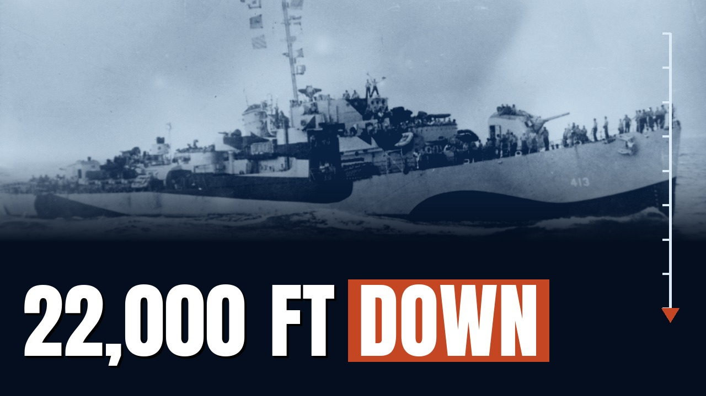
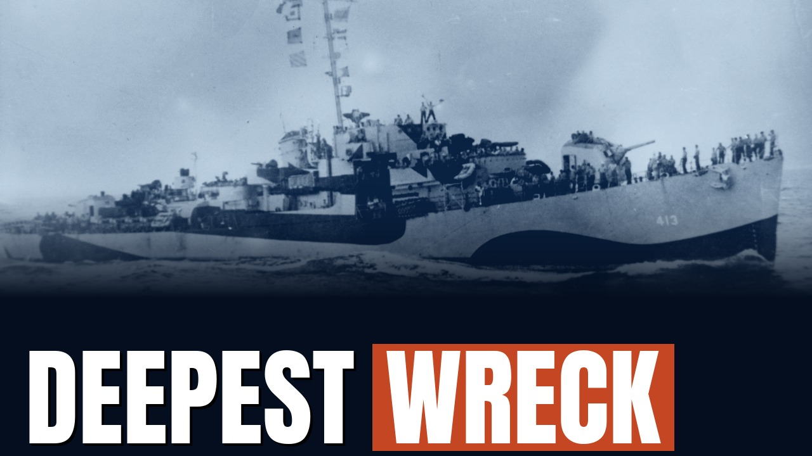
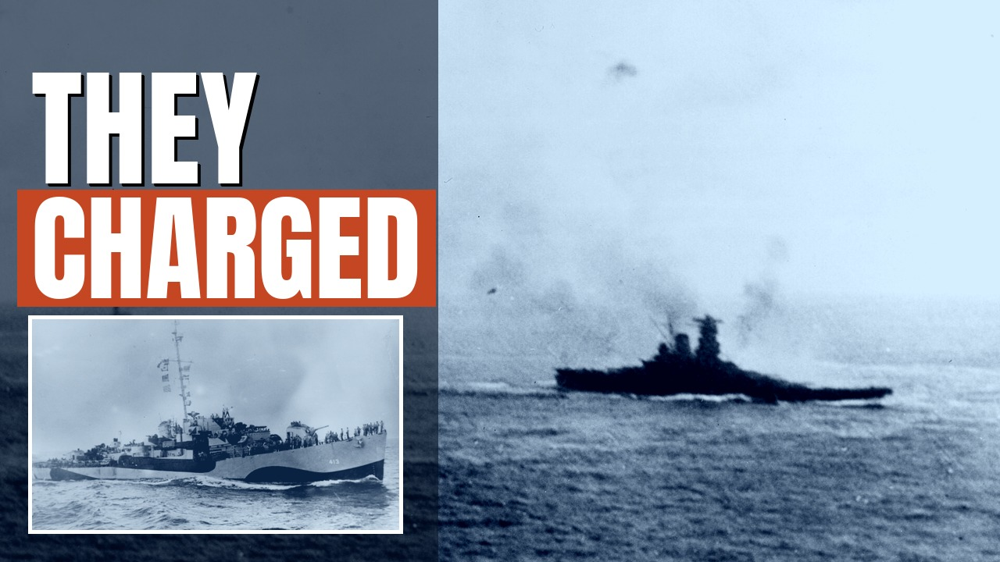

Video file: uss_samuel_b_roberts_full_v1.mp4 (15:24, 1080p) · Fleet's End video #5
1. Title
This Tiny Warship Charged a Battleship Fleet. Now It's the Deepest Wreck Ever Found
vidIQ score 98. Alternates: “They Found Her 22,000 Feet Down. This Is How She Got There” (97) · “The Deepest Shipwreck Ever Found Was a Tiny Ship That Charged Battleships” (93). The working title “The Deepest Shipwreck Ever Found” scored 83 (below the 85 floor). Not used: “...Charged the Yamato...” (overclaim: her torpedo run was at the cruisers). Before publishing, search the news once more for a deeper wreck. Details: script/TITLES_THUMBS.md.
2. Thumbnails

V1 "22,000 FT DOWN", upload with this one V1_22000_ft_down.jpg

V2 "DEEPEST WRECK", Test & Compare V2_deepest_wreck.jpg

V3 "THEY CHARGED", Test & Compare V3_they_charged.jpg
Judge the Test & Compare winner on day 7–14, not day 1. Space this video ≥ 2 days from the USS Ranger / USS Nevada uploads (2–3 a week max).
3. Upload settings
Setting
Value
Altered or synthetic content
YES (AI narration; maps and graphics made for this channel)
Made for kids
No
Category
Education
Language / caption language
English / English
License
Standard YouTube License
Chapters
Automatic from the timestamps in the description
End screen
The last 18 s are an end-screen map (right half clear): add “subscribe” + one “best for viewer” video
Comments
On. Post and pin the comment in section 6 right after publishing; reply to family/veteran stories in the first 48 h
4. Description (copy everything in the box)
Almost 23,000 feet under the Philippine Sea lies a small American warship that once charged a fleet of battleships. On 25 October 1944, off Samar, the destroyer escort USS Samuel B. Roberts was sent against Admiral Kurita's Center Force, with the Yamato at its head. Her captain told his crew that survival could not be expected. In June 2022 her wreck was found almost 6,900 metres down: the deepest shipwreck ever found. How did a ship this small end up this deep, and what did the cameras find when they finally reached her?
Chapters
0:00 Hook
0:53 Taffy Three
2:40 The Little Ship
4:17 The Torpedo Run
5:53 The Duel
9:03 Fifty Hours
10:29 The Search
13:18 Found
Should the search go on for the last ships of Taffy 3, or should wrecks this deep be left in the dark with the men who went down with them? Tell us in the comments, and if someone in your family served off Samar, we would like to hear their story.
Credits
Archive film: US Navy / US National Archives (Naval Photographic Center reels, RG 428). Public domain.
Archive photos: US Navy, Naval History and Heritage Command and US National Archives (80-G, NH, 428 series), US Army Air Forces (NARA). Public domain.
Documents: Lt Cdr R. W. Copeland, Combined Action Report and Report of Loss of USS Samuel B. Roberts (DE-413), 20 November 1944; USS Samuel B. Roberts war diary, September 1944; USS John C. Butler report of the engagement off Samar (US National Archives).
Deep-sea video and stills: NOAA Ocean Exploration (public domain). They are ILLUSTRATIVE: they are not the wreck site.
The 2022 images of the wreck belong to the expedition (Caladan Oceanic) and are not shown; the wreck is described from the expedition's and the Navy's published accounts.
Battle photos show other ships of Taffy 3 or of the Leyte Gulf battles: no photograph or film of the Samuel B. Roberts in action is known. Every picture is labelled on screen.
Maps: terrain and bathymetry from Mapzen / AWS Terrain Tiles (open data). Positions in the battle and of the wreck are approximate; the exact wreck position is not public.
Narration: AI voice (Kokoro TTS).
Sound effects: Epidemic Sound.
Music by Chris Zabriskie, from the album Music from Neptune Flux, licensed under Creative Commons Attribution 4.0:
"Stories About the World That Once Was"
"Your Mother's Daughter"
"To Hide Their Secrets"
"That Hopeful Future Is All I've Ever Known"
"I Should Have Been More Human"
Sources: Lt Cdr Robert W. Copeland's action report (20 Nov 1944, US National Archives); Dictionary of American Naval Fighting Ships (Samuel B. Roberts I, via the HyperWar mirror); US Navy battle-experience bulletin and Task Force 77 reports on Leyte Gulf; the 1944 Navy press release on the Roberts; Military Times Hall of Valor (Navy Cross, Silver Star citations); US Navy / Naval History and Heritage Command statement confirming the wreck (June 2022) and Samuel J. Cox's "hallowed war grave" remark (via Seapower); Guinness World Records (deepest shipwreck found to date); Caladan Oceanic and EYOS Expeditions accounts as reported by CBS News, Stars and Stripes, Smithsonian, Divernet and Maritime Executive; NOAA Ocean Exploration (Titanic depth). Full source list on request.
#USSSamuelBRoberts #BattleOffSamar #NavalHistory
5. Tags
USS Samuel B. Roberts, Samuel B. Roberts DE-413, deepest shipwreck, deepest shipwreck ever found, Battle off Samar, Taffy 3, Battle of Leyte Gulf, destroyer escort, Yamato, Kurita, Robert Copeland, Paul Carr, Victor Vescovo, Limiting Factor, USS Johnston wreck, Philippine Sea, WW2 naval history, US Navy history, shipwreck discovery, what happened to USS Samuel B. Roberts
6. First comment (post it, then pin it)
Sources for this video: Lt Cdr Copeland's own action report of 20 November 1944 (608 rounds of 5-inch fired, the first hit at 08:51, sank at 10:05; his words to the crew: "a fight against overwhelming odds from which survival could not be expected"), the Navy's 2022 confirmation of the wreck, and Guinness World Records. Whether her torpedoes hit the Chokai is still debated: her crew and the 1944 Navy said yes; Japanese records do not back it up. The depth was first given as 6,895 m and later refined to 6,865 m. Narration is an AI voice. If you spot a mistake, tell us here and we will correct it. Did someone in your family serve in Taffy 3?
7. Before you press Publish
☐
Watched the master once; names sound right (listen to voice_sample/names_sbr.mp3: Samar, Leyte, Kurita, Chokai, Kongo, Copeland, Checotah, Morizet, EYOS)
☐
“Altered or synthetic content” = Yes
☐
Thumbnail V1 uploaded; V2 + V3 added in Test & Compare